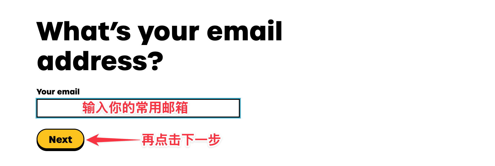
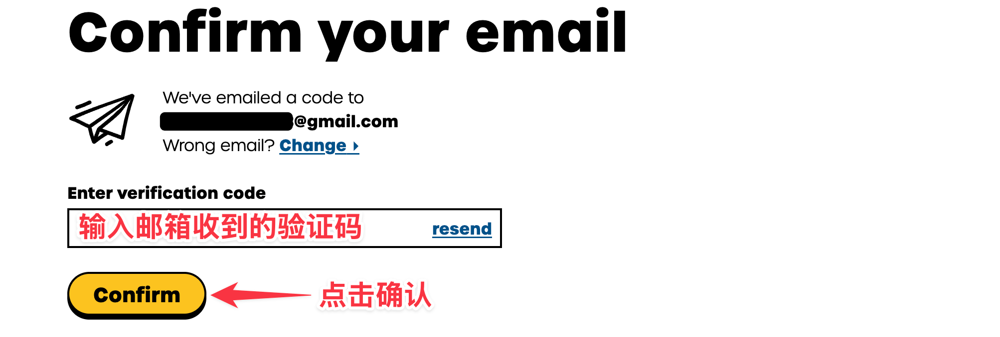
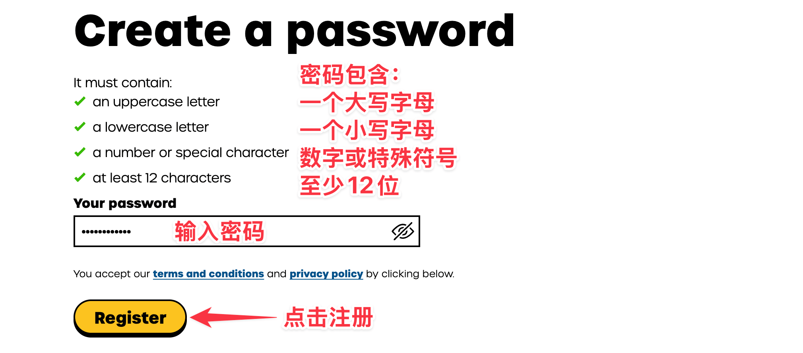
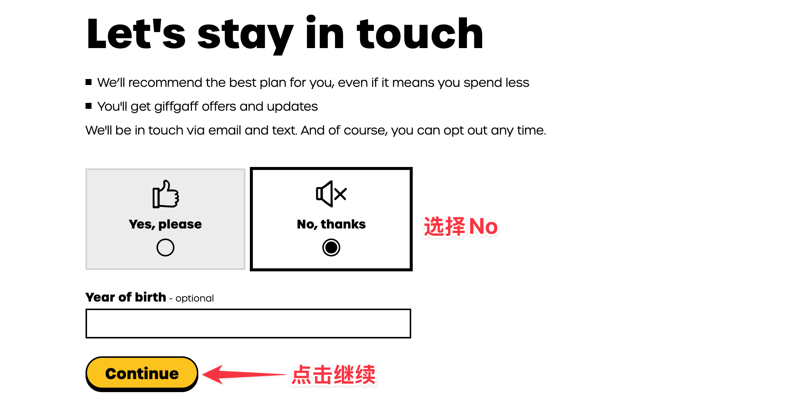
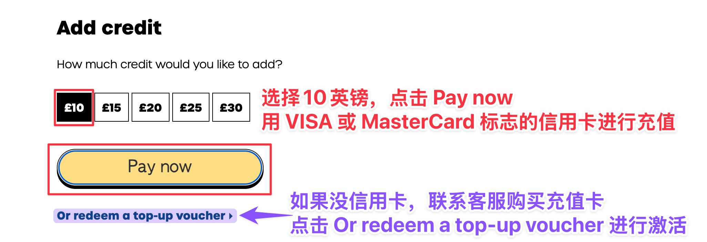
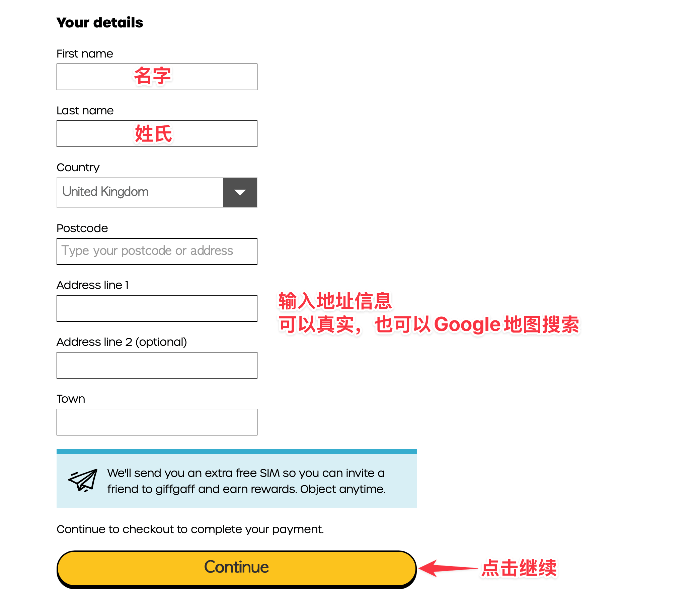
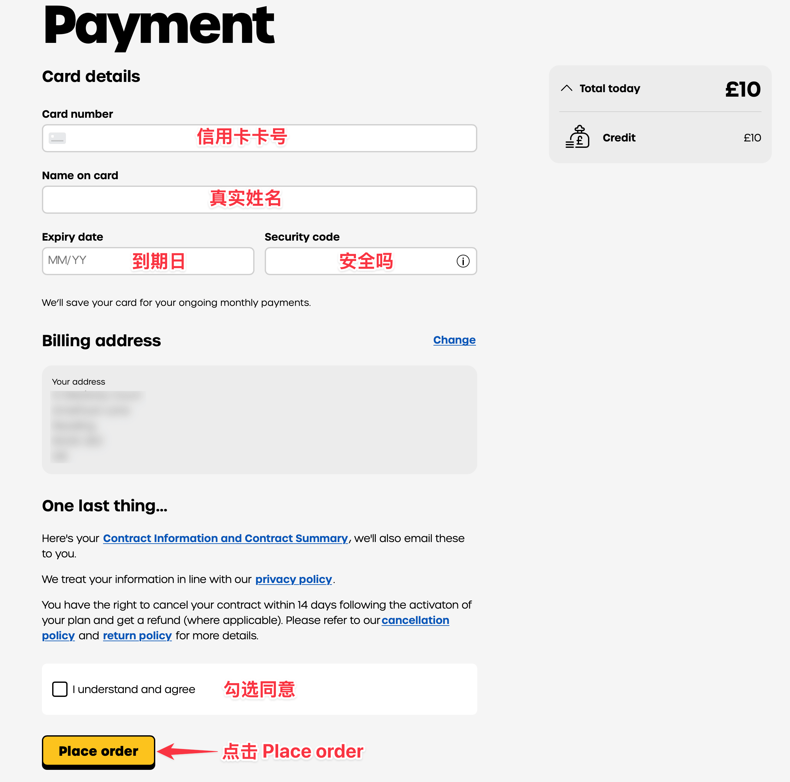
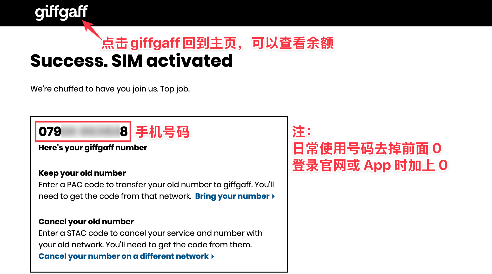
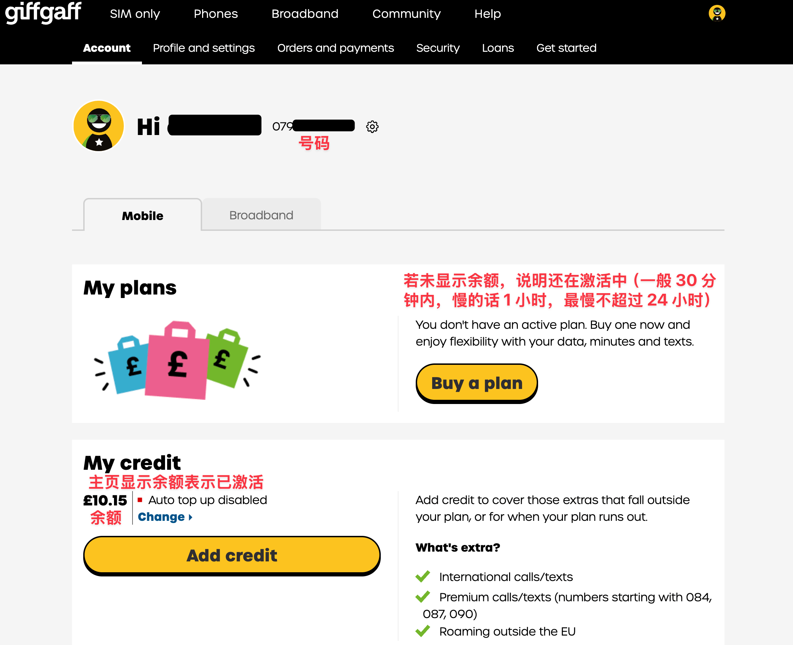

开始前先准备好
你已经拿到 giffgaff 实体 SIM，想把它绑定到自己的 giffgaff 账号，并让号码可以收短信、打电话或使用数据。激活时建议先不要插卡，手机和电脑保持 Wi-Fi 在线。
- SIM 卡或 SIM 卡包装上的 activation code。
- 一个可收验证码邮件的邮箱。
- 可用的银行卡、PayPal、voucher 或页面显示的其他支付方式。
- 如果页面要求地址，请使用真实可用的联系地址、住宿地址或收件地址。
下面截图展示的是典型激活路径。giffgaff 会调整页面文案和套餐入口，操作时以你实际看到的按钮和金额为准。
输入激活码
打开 giffgaff.com/activate。在输入框里填入卡上的 13 位数字码，然后点击 Activate your SIM。
如果卡套上存在6位激活码，也可使用6位激活码完成激活

填写邮箱
输入你要绑定到 giffgaff 账号的邮箱，点击 Next。这个邮箱后续会用于登录、找回密码和接收激活通知。
建议使用长期可访问的邮箱，不要使用临时邮箱。

确认邮箱验证码
打开邮箱，找到 giffgaff 发来的验证码邮件，把验证码填回页面并点击 Confirm。
如果没收到邮件，先检查垃圾邮件、广告邮件夹，再确认邮箱拼写是否正确。

创建账号密码
设置 giffgaff 账号密码，按页面要求达到长度和复杂度后点击 Register。
这个账号会管理余额、套餐、SIM 状态和后续补卡、换卡等操作，请保存好登录信息。

跳过不需要的额外选择
如果页面询问是否需要额外推荐或增值选项，按自己的使用场景选择。只想先激活 SIM 的用户，通常可以选择 No, thanks 后继续。
提交前看清页面是否会开启自动续费或绑定额外服务。

选择 Pay as you go
如果你主要用于收短信、保号或低频使用，可以下拉找到 Pay as you go。如果需要长期流量，也可以按页面选择合适 plan。
人在英国境外时，先看清漫游限制和续费开关，再继续。

选择充值金额或 voucher
页面会让你选择首次充值金额或兑换充值券。使用银行卡或 PayPal 时按页面显示的金额继续；已有 voucher 时选择兑换入口并输入券码。
金额和可用支付方式会变化，以结算页面实际显示为准。

填写个人资料和地址
按页面要求填写姓名、地址和联系信息。地址用于账单、账号资料或合规校验，请使用真实可用的信息。
营销邮件、短信和偏好设置可以按自己的需要选择。

确认支付
输入支付信息，检查金额、条款勾选和续费开关，然后点击 Place order。不要在支付处理中反复刷新页面。
如果扣款后页面卡住，先登录 giffgaff 后台查看订单和 SIM 状态，再决定是否重试。

记录分配到的号码
激活成功后页面会显示你的 giffgaff 手机号，英国号码通常以 +44 开头。先把号码记录下来，后续登录、验证和收短信会用到。
如果页面还在处理中，等待一段时间后再刷新后台状态。

回到主页确认余额
回到 giffgaff 主页或后台，确认能看到余额、plan 或 SIM 状态。然后插卡重启手机，等待注册网络。
通常几分钟到几小时内会生效，个别情况最长可能需要 24 小时。能看到号码和余额后，再测试收短信、拨打电话和上网。

常见卡点
- 找不到激活码：检查 SIM 卡套正反面，查找
Activation Code、条形码附近的 13 位数字，或回到官方激活页看示意图。 - 激活码无效：确认 SIM 没被别人激活过；换浏览器、清缓存、关闭翻译插件后再试。
- 收不到确认邮件：检查垃圾邮件、广告邮件夹；邮箱填错时通常需要重新开始或联系官方支持。
- 付款失败：换支付方式，或确认银行卡允许境外/线上支付。不要连续重复提交多次。
- 激活后没信号：重启手机、手动选网、换卡槽；仍无信号时等待一段时间再查后台状态。
APN 检查
如果 SIM 已有信号但无法上网，手动检查 APN：
- APN：
giffgaff.com - 用户名：
gg - 密码：
p
iPhone 通常会自动下发配置。Android 机型如果没有自动配置，可以在“移动网络”或“接入点名称”里新增 APN。